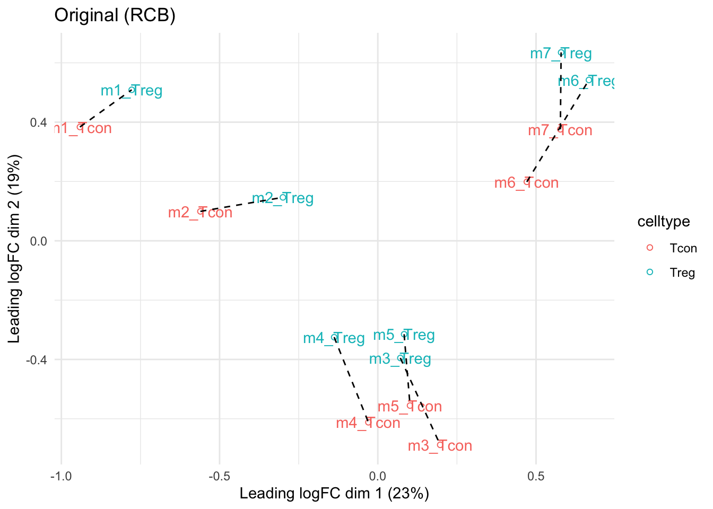
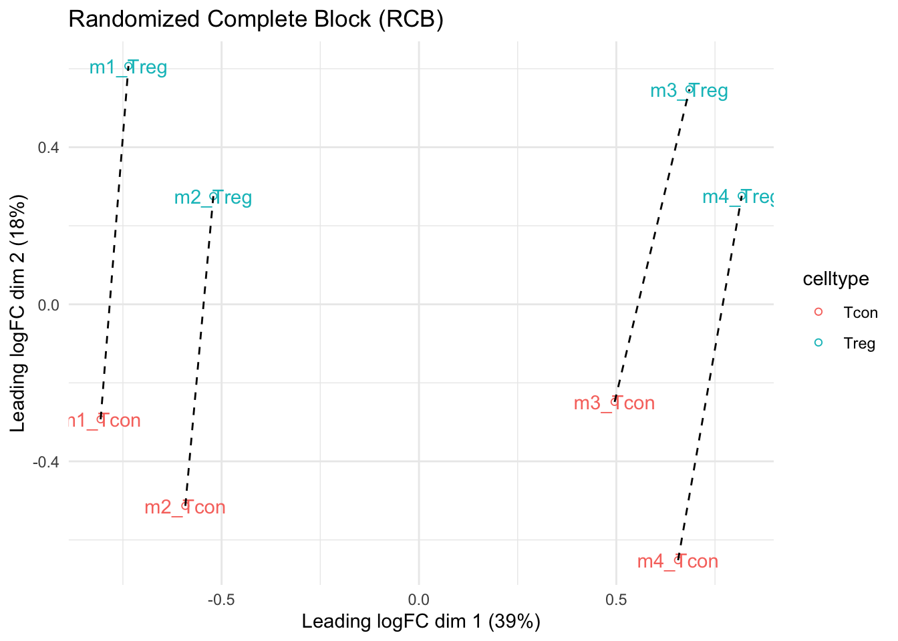
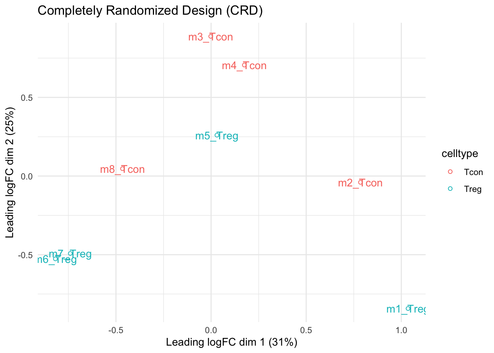
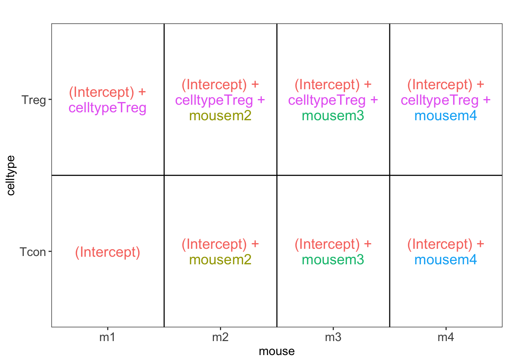
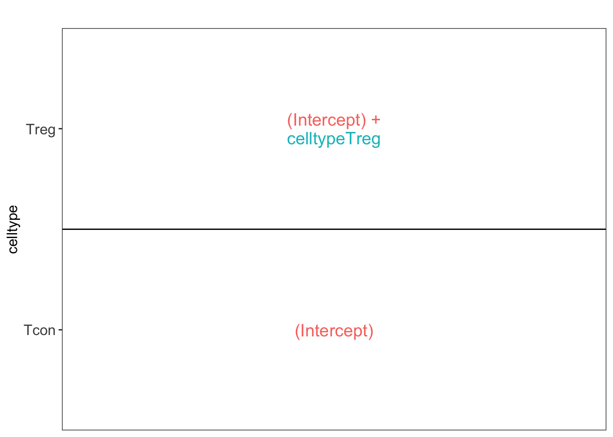
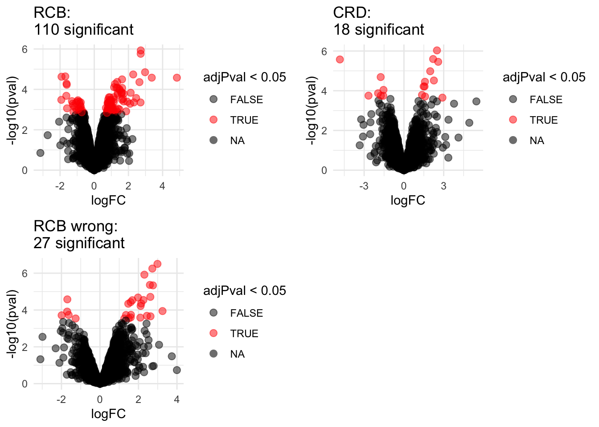
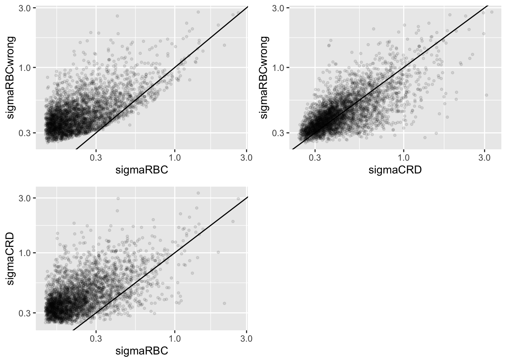

library(tidyverse)
library(limma)
library(QFeatures)
library(msqrob2)
library(plotly)
library(gridExtra)
library("BiocFileCache")
bfc <- BiocFileCache()
peptidesFile <- bfcrpath(bfc,"https://github.com/statOmics/msqrob2data/raw/refs/heads/main/dda/mouseTcell/peptidesRCB.txt")
peptidesFile2 <- bfcrpath(bfc,"https://github.com/statOmics/msqrob2data/raw/refs/heads/main/dda/mouseTcell/peptidesCRD.txt")
peptidesFile3 <- bfcrpath(bfc,"https://github.com/statOmics/msqrob2data/raw/refs/heads/main/dda/mouseTcell/peptides.txt")
ecols <- grep("Intensity\\.", names(read.delim(peptidesFile)))
qf <- readQFeatures(
assayData = read.delim(peptidesFile),
fnames = 1,
quantCols = ecols,
name = "peptides_raw")
ecols2 <- grep("Intensity\\.", names(read.delim(peptidesFile2)))
qf2 <- readQFeatures(
assayData = read.delim(peptidesFile2),
fnames = 1,
quantCols = ecols2,
name = "peptides_raw")
ecols3 <- grep("Intensity\\.", names(read.delim(peptidesFile3)))
qf3 <- readQFeatures(
assayData = read.delim(peptidesFile3),
fnames = 1,
quantCols = ecols3,
name = "peptides_raw")
### Design
colData(qf)$celltype <- substr(
colnames(qf[["peptides_raw"]]),
11,
14) %>%
unlist %>%
as.factor
colData(qf)$mouse <- qf[[1]] %>%
colnames %>%
strsplit(split="[.]") %>%
sapply(function(x) x[3]) %>%
as.factor
colData(qf2)$celltype <- substr(
colnames(qf2[["peptides_raw"]]),
11,
14) %>%
unlist %>%
as.factor
colData(qf2)$mouse <- qf2[[1]] %>%
colnames %>%
strsplit(split="[.]") %>%
sapply(function(x) x[3]) %>%
as.factor
colData(qf3)$celltype <- substr(
colnames(qf3[["peptides_raw"]]),
11,
14) %>%
unlist %>%
as.factor
colData(qf3)$mouse <- qf3[[1]] %>%
colnames %>%
strsplit(split="[.]") %>%
sapply(function(x) x[3]) %>%
as.factorWrapup Blocking
Lieven Clement ![]()
Note, that this dataset has been acquired with DDA (data dependent acquisition). It was searched with MaxQuant. The analysis starts from the peptides.txt file, which is a table in the output directory of MaxQuant with the data summarized at the peptide-level.
The preprocessing steps are slightly different. The modeling concepts, however, are also applicable to DIA data.
1 Import Data and Preprocessing
1.1 Data
Click to see code
1.2 Preprocessing
1.2.1 Log-transform
Click to see code to log-transfrom the data
- Peptides with zero intensities are missing peptides and should be represent with a
NAvalue rather than0.
qf <- zeroIsNA(qf, "peptides_raw") # convert 0 to NA
qf2 <- zeroIsNA(qf2, "peptides_raw") # convert 0 to NA
qf3 <- zeroIsNA(qf3, "peptides_raw") # convert 0 to NA- Logtransform data with base 2
qf <- logTransform(qf, base = 2, i = "peptides_raw", name = "peptides_log")
qf2 <- logTransform(qf2, base = 2, i = "peptides_raw", name = "peptides_log")
qf3 <- logTransform(qf3, base = 2, i = "peptides_raw", name = "peptides_log")1.2.2 Filtering
Click to see details on filtering
- Handling overlapping protein groups
Only use proteotypic proteins
qf <- filterFeatures(
qf, ~ Proteins != "" & ## Remove failed protein inference
!grepl(";", Proteins))
qf2 <- filterFeatures(
qf2, ~ Proteins != "" & ## Remove failed protein inference
!grepl(";", Proteins))
qf3 <- filterFeatures(
qf3, ~ Proteins != "" & ## Remove failed protein inference
!grepl(";", Proteins))- Remove reverse sequences (decoys) and contaminants
We now remove the contaminants, peptides that map to decoy sequences, and proteins which were only identified by peptides with modifications.
qf <- filterFeatures(qf,~Reverse != "+")
qf <- filterFeatures(qf,~ Potential.contaminant != "+")
qf2 <- filterFeatures(qf2,~Reverse != "+")
qf2 <- filterFeatures(qf2,~ Potential.contaminant != "+")
qf3 <- filterFeatures(qf3,~Reverse != "+")
qf3 <- filterFeatures(qf3,~ Potential.contaminant != "+")- Drop peptides that were only identified in one sample
We keep peptides that were observed at last twice.
nObs <- 2
n1 <- ncol(qf[["peptides_log"]])
n2 <- ncol(qf2[["peptides_log"]])
n3 <- ncol(qf3[["peptides_log"]])
(qf <- filterNA(qf, i = "peptides_log", pNA = (n1 - nObs) / n1))An instance of class QFeatures (type: bulk) with 2 sets:
[1] peptides_raw: SummarizedExperiment with 50292 rows and 8 columns
[2] peptides_log: SummarizedExperiment with 44394 rows and 8 columns (qf2 <- filterNA(qf2, i = "peptides_log", pNA = (n2 - nObs) / n2))An instance of class QFeatures (type: bulk) with 2 sets:
[1] peptides_raw: SummarizedExperiment with 50292 rows and 8 columns
[2] peptides_log: SummarizedExperiment with 43346 rows and 8 columns (qf3 <- filterNA(qf3, i = "peptides_log", pNA = (n3 - nObs) / n3))An instance of class QFeatures (type: bulk) with 2 sets:
[1] peptides_raw: SummarizedExperiment with 50292 rows and 14 columns
[2] peptides_log: SummarizedExperiment with 47373 rows and 14 columns 1.3 Normalization
Click to see code to normalize the data
qf <- sweep( #4. Subtract log2 norm factor column-by-column (MARGIN = 2)
qf,
MARGIN = 2,
STATS = nfLogMedianOfRatios(qf, i="peptides_log"), #1.
i = "peptides_log",
name = "peptides_norm"
)
qf2 <- sweep( #4. Subtract log2 norm factor column-by-column (MARGIN = 2)
qf2,
MARGIN = 2,
STATS = nfLogMedianOfRatios(qf2, i="peptides_log"), #1.
i = "peptides_log",
name = "peptides_norm"
)
qf3 <- sweep( #4. Subtract log2 norm factor column-by-column (MARGIN = 2)
qf3,
MARGIN = 2,
STATS = nfLogMedianOfRatios(qf3, i="peptides_log"), #1.
i = "peptides_log",
name = "peptides_norm"
)1.4 Summarization
Click to see code to summarize the data
qf <- aggregateFeatures(qf,
i = "peptides_norm",
fcol = "Proteins",
name = "proteins",
fun = function(X) iq::maxLFQ(X)$estimate
)
qf2 <- aggregateFeatures(qf2,
i = "peptides_norm",
fcol = "Proteins",
name = "proteins",
fun = function(X) iq::maxLFQ(X)$estimate
)
qf3 <- aggregateFeatures(qf3,
i = "peptides_norm",
fcol = "Proteins",
name = "proteins",
fun = function(X) iq::maxLFQ(X)$estimate
)2 Data Exploration: what is impact of blocking?
Click to see code
levels(colData(qf3)$mouse) <- paste0("m",1:7)
mdsObj3 <- plotMDS(assay(qf3[["proteins"]]), plot = FALSE)
mdsOrig <- colData(qf3) %>%
as.data.frame %>%
mutate(mds1 = mdsObj3$x,
mds2 = mdsObj3$y,
lab = paste(mouse,celltype,sep="_")) %>%
ggplot(aes(x = mds1, y = mds2, label = lab, color = celltype, group = mouse)) +
geom_text(show.legend = FALSE) +
geom_point(shape = 21) +
geom_line(color = "black", linetype = "dashed") +
xlab(
paste0(
mdsObj3$axislabel,
" ",
1,
" (",
paste0(
round(mdsObj3$var.explained[1] *100,0),
"%"
),
")"
)
) +
ylab(
paste0(
mdsObj3$axislabel,
" ",
2,
" (",
paste0(
round(mdsObj3$var.explained[2] *100,0),
"%"
),
")"
)
) +
ggtitle("Original (RCB)")+
theme_minimal()
levels(colData(qf)$mouse) <- paste0("m",1:4)
mdsObj <- plotMDS(assay(qf[["proteins"]]), plot = FALSE)
mdsRCB <- colData(qf) %>%
as.data.frame %>%
mutate(mds1 = mdsObj$x,
mds2 = mdsObj$y,
lab = paste(mouse,celltype,sep="_")) %>%
ggplot(aes(x = mds1, y = mds2, label = lab, color = celltype, group = mouse)) +
geom_text(show.legend = FALSE) +
geom_point(shape = 21) +
geom_line(color = "black", linetype = "dashed") +
xlab(
paste0(
mdsObj$axislabel,
" ",
1,
" (",
paste0(
round(mdsObj$var.explained[1] *100,0),
"%"
),
")"
)
) +
ylab(
paste0(
mdsObj$axislabel,
" ",
2,
" (",
paste0(
round(mdsObj$var.explained[2] *100,0),
"%"
),
")"
)
) +
ggtitle("Randomized Complete Block (RCB)")+
theme_minimal()
levels(colData(qf2)$mouse) <- paste0("m",1:8)
mdsObj2 <- plotMDS(assay(qf2[["proteins"]]), plot = FALSE)
mdsCRD <- colData(qf2) %>%
as.data.frame %>%
mutate(mds1 = mdsObj2$x,
mds2 = mdsObj2$y,
lab = paste(mouse,celltype,sep="_")) %>%
ggplot(aes(x = mds1, y = mds2, label = lab, color = celltype, group = mouse)) +
geom_text(show.legend = FALSE) +
geom_point(shape = 21) +
xlab(
paste0(
mdsObj$axislabel,
" ",
1,
" (",
paste0(
round(mdsObj2$var.explained[1] *100,0),
"%"
),
")"
)
) +
ylab(
paste0(
mdsObj$axislabel,
" ",
2,
" (",
paste0(
round(mdsObj2$var.explained[2] *100,0),
"%"
),
")"
)
) +
ggtitle("Completely Randomized Design (CRD)") +
theme_minimal()mdsOrig
mdsRCB
mdsCRD
- We observe that the leading fold change is according to mouse
- In the second dimension we see a separation according to cell-type
- With the Randomized Complete Block design (RCB) we can remove the mouse effect from the analysis!
3 Modeling and inference
3.1 RCB analysis
qf <- msqrob(
object = qf,
i = "proteins",
formula = ~ celltype + mouse)3.2 RCB wrong analysis
qf <- msqrob(
object = qf,
i = "proteins",
formula = ~ celltype, modelColumnName = "wrongModel")3.3 CRD analysis
qf2 <- msqrob(
object = qf2,
i = "proteins",
formula = ~ celltype)3.4 Inference
library(ExploreModelMatrix)
VisualizeDesign(colData(qf),~ celltype + mouse)$plotlist[[1]]
VisualizeDesign(colData(qf2),~ celltype)$plotlist[[1]]
L <- makeContrast("celltypeTreg = 0", parameterNames = c("celltypeTreg"))
qf <- hypothesisTest(object = qf, i = "proteins", contrast = L)
qf <- hypothesisTest(object = qf, i = "proteins", contrast = L, modelColumn = "wrongModel", resultsColumnNamePrefix="wrong")
qf2 <- hypothesisTest(object = qf2, i = "proteins", contrast = L)4 Advantage of Blocking: comparison between designs
4.1 Volcano plots
Click to see code
volcanoRCB <- ggplot(
rowData(qf[["proteins"]])$celltypeTreg,
aes(x = logFC, y = -log10(pval), color = adjPval < 0.05)
) +
geom_point(cex = 2.5) +
scale_color_manual(values = alpha(c("black", "red"), 0.5)) +
theme_minimal() +
ggtitle(paste0("RCB: \n",
sum(rowData(qf[["proteins"]])$celltypeTreg$adjPval<0.05,na.rm=TRUE),
" significant"))
volcanoRCBwrong <- ggplot(
rowData(qf[["proteins"]])$wrongcelltypeTreg,
aes(x = logFC, y = -log10(pval), color = adjPval < 0.05)
) +
geom_point(cex = 2.5) +
scale_color_manual(values = alpha(c("black", "red"), 0.5)) +
theme_minimal() +
ggtitle(paste0("RCB wrong: \n",
sum(rowData(qf[["proteins"]])$wrongcelltypeTreg$adjPval<0.05,na.rm=TRUE),
" significant"))
volcanoCRD <- ggplot(
rowData(qf2[["proteins"]])$celltypeTreg,
aes(x = logFC, y = -log10(pval), color = adjPval < 0.05)
) +
geom_point(cex = 2.5) +
scale_color_manual(values = alpha(c("black", "red"), 0.5)) +
theme_minimal() +
ggtitle(paste0("CRD: \n",
sum(rowData(qf2[["proteins"]])$celltypeTreg$adjPval<0.05,na.rm=TRUE),
" significant"))grid.arrange(volcanoRCB,volcanoCRD, volcanoRCBwrong,ncol=2)
4.2 Anova table: Q7TPR4, Alpha-actinin-1
Disclaimer: the Anova analysis is only for didactical purposes. In practice we assess the hypotheses using msqrob2.
We illustrate the power gain of blocking using an Anova analysis on 1 protein.
Note, that msqrob2 will perform a similar analysis, but, it uses robust regression and it uses an empirical Bayes estimator for the variance.
prot <- "Q7TPR4"
dataHlp <- colData(qf) %>%
as.data.frame %>%
mutate(intensity=assay(qf[["proteins"]])[prot,],
intensityCRD=assay(qf2[["proteins"]])[prot,])
anova(lm(intensity~ celltype + mouse, dataHlp)) Analysis of Variance Table
Response: intensity
Df Sum Sq Mean Sq F value Pr(>F)
celltype 1 5.1828 5.1828 148.260 0.001193 **
mouse 3 1.1708 0.3903 11.165 0.039011 *
Residuals 3 0.1049 0.0350
---
Signif. codes: 0 '***' 0.001 '**' 0.01 '*' 0.05 '.' 0.1 ' ' 1 anova(lm(intensity~ celltype,dataHlp))Analysis of Variance Table
Response: intensity
Df Sum Sq Mean Sq F value Pr(>F)
celltype 1 5.1828 5.1828 24.376 0.002611 **
Residuals 6 1.2757 0.2126
---
Signif. codes: 0 '***' 0.001 '**' 0.01 '*' 0.05 '.' 0.1 ' ' 1 anova(lm(intensityCRD~ celltype,dataHlp))Analysis of Variance Table
Response: intensityCRD
Df Sum Sq Mean Sq F value Pr(>F)
celltype 1 6.0660 6.066 36.535 0.0009279 ***
Residuals 6 0.9962 0.166
---
Signif. codes: 0 '***' 0.001 '**' 0.01 '*' 0.05 '.' 0.1 ' ' 14.3 Comparison Empirical Bayes standard deviation in msqrob2
Click to see code
accessions <- rownames(qf[["proteins"]])[rownames(qf[["proteins"]])%in%rownames(qf2[["proteins"]])]
dat <- data.frame(
sigmaRBC = sapply(rowData(qf[["proteins"]])$msqrobModels[accessions], getSigmaPosterior),
sigmaRBCwrong = sapply(rowData(qf[["proteins"]])$wrongModel[accessions], getSigmaPosterior),
sigmaCRD <- sapply(rowData(qf2[["proteins"]])$msqrobModels[accessions], getSigmaPosterior)
)
plotRBCvsWrong <- ggplot(data = dat, aes(sigmaRBC, sigmaRBCwrong)) +
geom_point(alpha = 0.1, shape = 20) +
scale_x_log10() +
scale_y_log10() +
geom_abline(intercept=0,slope=1)
plotCRDvsWrong <- ggplot(data = dat, aes(sigmaCRD, sigmaRBCwrong)) +
geom_point(alpha = 0.1, shape = 20) +
scale_x_log10() +
scale_y_log10() +
geom_abline(intercept=0,slope=1)
plotRBCvsCRD <- ggplot(data = dat, aes(sigmaRBC, sigmaCRD)) +
geom_point(alpha = 0.1, shape = 20) +
scale_x_log10() +
scale_y_log10() +
geom_abline(intercept=0,slope=1)grid.arrange(
plotRBCvsWrong,
plotCRDvsWrong,
plotRBCvsCRD,
nrow=2)
We clearly observe that the standard deviation of the protein expression in the RCB is smaller for the majority of the proteins than that obtained with the CRD
The standard deviation of the protein expression RCB where we perform a wrong analysis without considering the blocking factor according to mouse is much larger for the marjority of the proteins than that obtained with the correct analysis.
Indeed, when we ignore the blocking factor in the RCB design we do not remove the variability according to mouse from the analysis and the mouse effect is absorbed in the error term. The standard deviation than becomes very comparable to that observed in the completely randomised design where we could not remove the mouse effect from the analysis.
Why are some of the standard deviations for the RCB with the correct analysis larger than than of the RCB with the incorrect analysis that ignored the mouse blocking factor?
Can you think of a reason why it would not be useful to block on a particular factor?